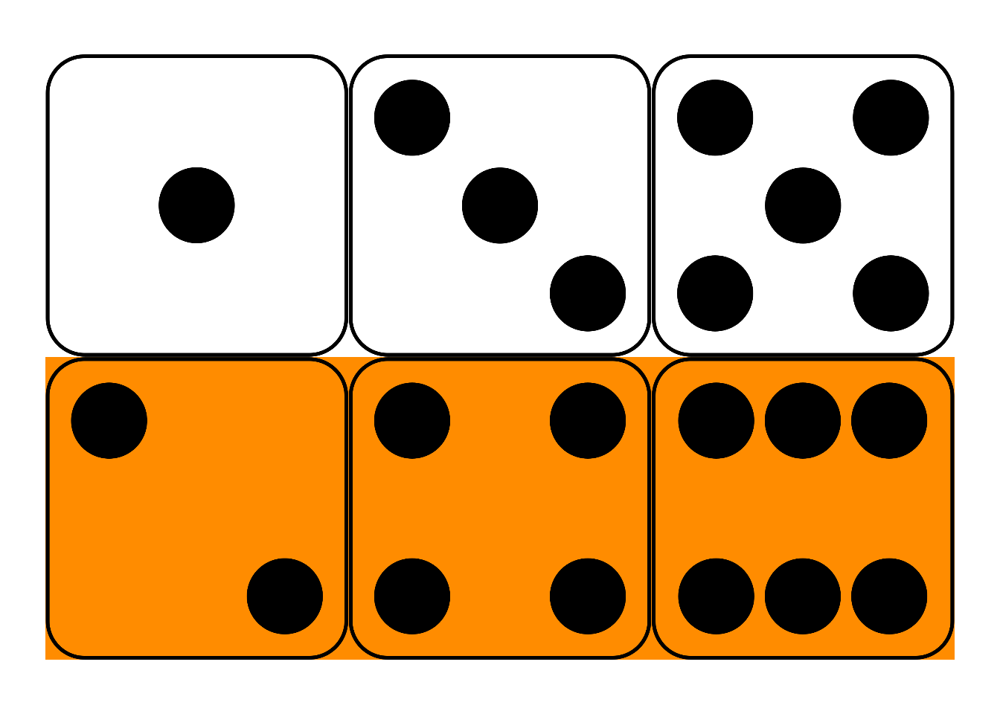
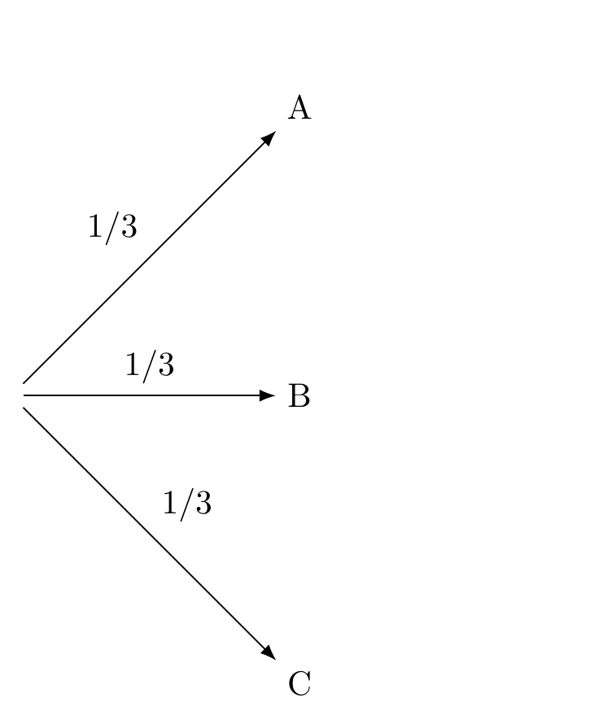
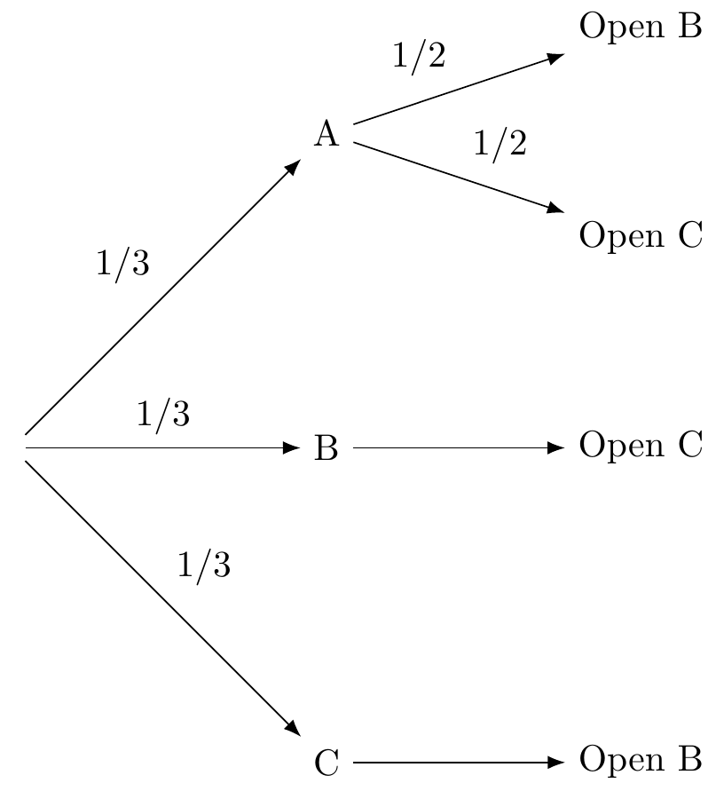
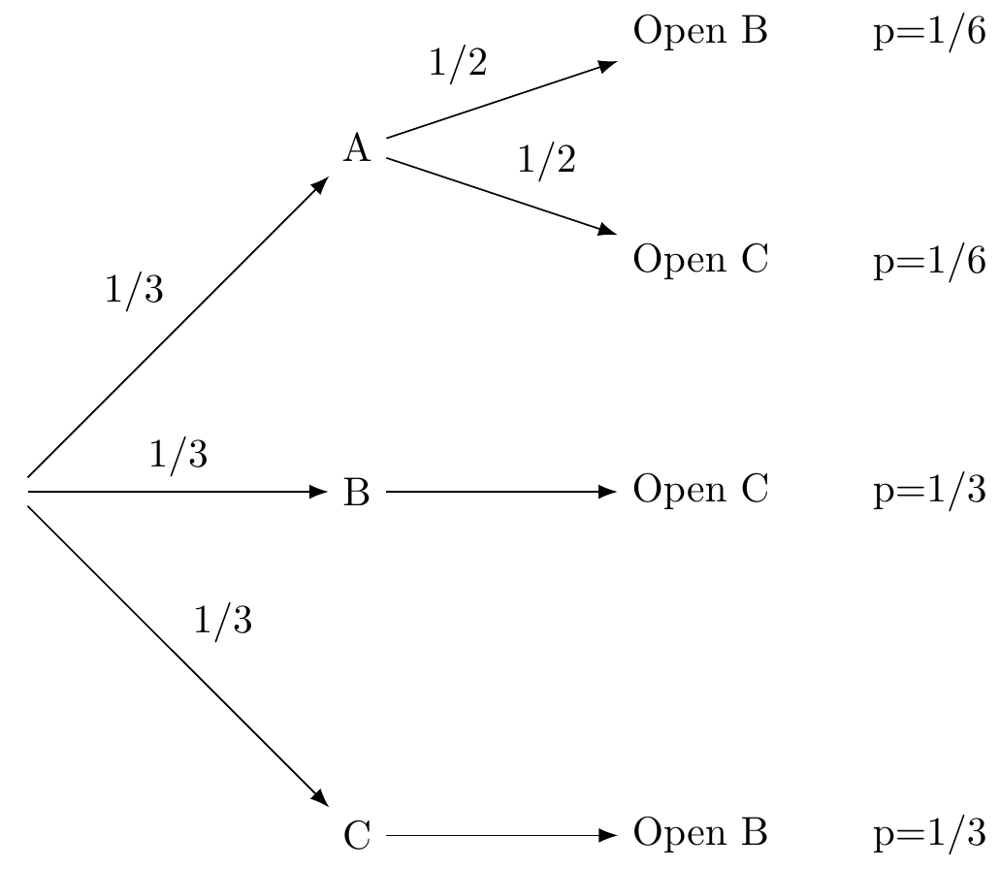
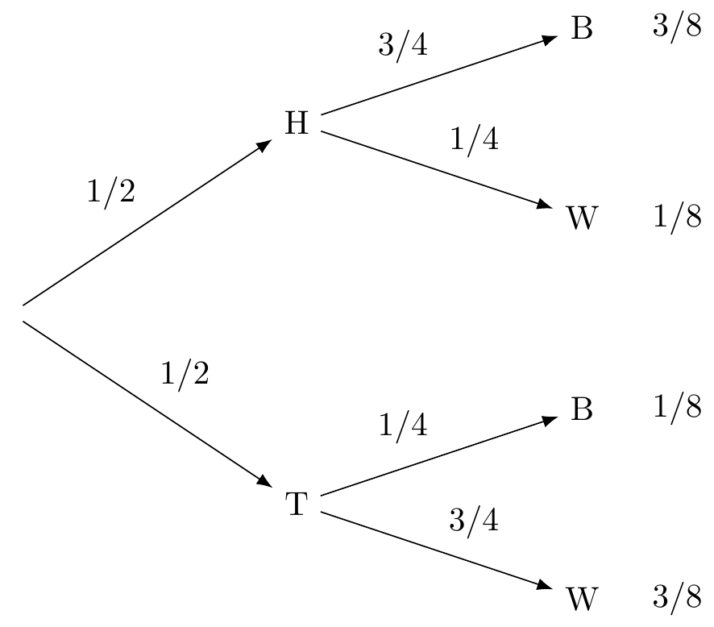
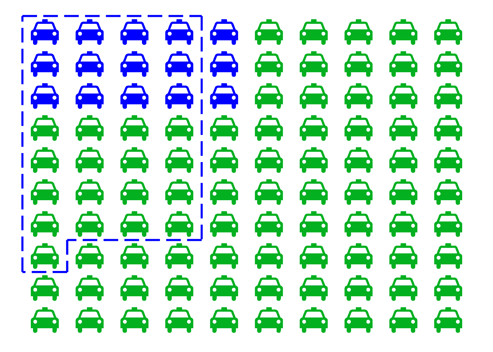

Chapter 10 Conditional Probabilities and Likelihoods
Assuming you have a driver’s licence and the roads are relatively clear, the chances of crashing your car are pretty low. But if you’re drink, the chances of crash are much higher. Probabilities change depending on the conditions.
We already have notation for symbolizing this idea. We use \(P(A | B)\) to represent the probability that \(A\) is true given that \(B\) is true. For example, to say the probability of \(A\) given \(B\) is 30%, we write: \[ P(A | B) = .3 \] When we condition probabilities in this way, we call them conditional probabilities. Conditional probabilities play a central role in the remaining material, so let’s spend some time learning how to calculate them.
10.1 Calculating Conditional Probability
Most of this presentation is a light edit of Weisberg’s introduction to calculating conditional probability (6.1).
 Figure 10.1: Conditional probability in a fair die roll
Figure 10.1: Conditional probability in a fair die roll
Suppose I roll a fair, six-sided die behind a screen. You can’t see the result, but I tell you it’s an even number. What’s the probability it’s also a “high” number: either a \(4\), \(5\), or \(6\)?
Maybe you figured the correct answer: \(2/3\). But why is that correct? Because, out of the three even numbers (\(2\), \(4\), and \(6\)), two of them are high (\(4\) and \(6\)). And since the die is fair, we expect it to land on a high number \(2/3\) of the times it lands on an even number.
This hints at a formula for \(P(A | B)\).
- Conditional Probability
\[ P(A | B) = \frac{P(A \wedge B)}{P(B)}. \]
In the die-roll example, we considered how many of the \(B\) possibilities were also \(A\) possibilities. Which means we divided \(P(A \wedge B)\) by \(P(B)\).
In fact, this formula is our official definition for the concept of conditional probability. When we write the sequence of symbols \(P(A | B)\), it’s really just shorthand for the fraction \(P(A \wedge B) / P(B)\).
 Figure 10.2: Conditional probability is the size of the \(A \wedge B\) region compared to the entire \(B\) region.
Figure 10.2: Conditional probability is the size of the \(A \wedge B\) region compared to the entire \(B\) region.
In terms of an Euler diagram (Figure 10.2), the definition of conditional probability compares the size of the purple \(A \wedge B\) region to the size of the whole \(B\) region, purple and blue together. If you don’t mind getting a little colourful with your algebra: \[ P(A | B) = \frac{\color{bookpurple}{\blacksquare}}{\color{bookpurple}{\blacksquare} + \color{bookblue}{\blacksquare}}. \] So the definition works because, informally speaking, \(P(A \wedge B)/P(B)\) is the proportion of the \(B\) outcomes that are also \(A\) outcomes.
Dividing by zero is a common pitfall with conditional probability. Notice how the definition of \(P(A | B)\) depends on \(P(B)\) being larger than zero. If \(P(B) = 0\), then the formula The comedian Steven Wright once quipped that “black holes are where God divided by zero.” \[ P(A | B) = \frac{P(A \wedge B)}{P(B)} \] doesn’t even make any sense. There is no number that results from the division on the right hand side.88 There are alternative mathematical systems of probability, where conditional probability is defined differently to avoid this problem. But we’ll stick to the standard system. In this system, there’s just no such thing as “the probability of \(A\) given \(B\)” when \(B\) has zero probability.
In such cases we say that \(P(A | B)\) is undefined. It’s not zero, or some special number. It just isn’t a number.
10.2 Application: Monty Hall Problem
Here we’ll show how the concept of conditional probability allows us to solve the Monty Hall problem in the introduction. Here’s the problem description:
On the show there are three doors (A, B, and C), one of which with a prize behind it. You get to pick one of the doors. Let’s say you pick A. The host now opens one of the other two doors that you did not pick. But of course, the host doesn’t want to give away the game, so the door they open will be empty. After opening one of the two doors (B or C) the host asks, do you want to switch your choice or stick with your current choice of A?
The intuitive answer, one that many mathematicians and statisticians gave at the time, is that you should be indifferent between switching and staying with your choice of door A. Why? Because, the (incorrect) reasoning goes, there’s two doors (A and whichever one the host didn’t open) and an even chance between them of where the prize is. Notice that this question is about an unconditional probability.
The problem with this reasoning is that it ignores the events that proceeded. The reasoning would be apt if the game show had you picking between just two doors from the very start, and just because the host reveals what’s behind the door you didn’t pick, they ask you if you want to change your mind. But that’s not what’s going on the in the Monty Hall problem. The real question is: should you switch your choice from A given that the host opened a non-prize door after your initial choice? Notice that this question is about a conditional probability.89 What the host does is not independent of your initial guess.
If the prize is behind door A (the door you initially picked), then the host has a choice between opening up door B or door C. But if the prize isn’t behind door A, then the host is constrained. If the prize is behind door B, then the host will open C. If the prize is behind C, then the host will open B. What we’re reasoning about here are paths of possible events.
The first kind of event is random, it’s just about the location of the prize behind one of the three doors. So the probability of the prize being behind door A is 1/3, and similarly for doors B and C. In other words, your initial guess of door A has a 1/3 chance of being right.
A diagram can help (see Stage 1). Each arrow is a branch and has a probability associated with it.
 Figure 10.3: Stage 1 of tree diagram
The second kind of event is the host’s reveal of a non-prize door, which is not random if your choice of door A is incorrect, and is random if your choice of A is correct. Let’s build on the diagram above, showing what the host’s options are (see Stage 2). When the prize is behind door A (your guess) the host has two options, so we have two branches, each with a probability of 1/2. When the prize is behind door B, there’s only one thing the host can do (so that branch has a probability of 1, which we don’t bother labeling). Same thing when the prize is behind door C.
 Figure 10.4: Stage 2 of tree diagram
Now imagine you could play this game over and over again (thousands if you like!), always making your first pick door A.90 You can try it for yourself HERE. One third of the time the prize will be behind door A, and of those times, half of them the host opens door B and the other half door C. So that means that the top path where the prize is behind door A and the host opens door B will happen 1/6th of the time. Similarly for the path where the prize is behind door A and the host opens C. For the other two possibilities where the prize is behind door B or door C, the host only has one option, so each of those paths will happen 1/3rd of the time. Here’s our completed diagram with the probabilities at the end of the paths.
Figure 10.5: Stage 3 of tree diagram
Of course you don’t actually know which path you are on, but here’s what you do know: When the host opens door C, you are more likely to be on the middle path (1/3) than you are on the path above it (1/6). On the middle path the prize is behind door B, while in the path above the prize is behind door A. Since the middle path is the more likely one you’re on, you should switch your choice from A to B! The same reasoning applies if the host had opened door B instead - then you should switch your choice to C.
Notice that the probabilities at the end of the paths have to taken into account all the branches that lead to that end point. So the probability of being on the branch that goes from A to Open B is conditional on the previous branch that goes to A.
Here’s another example.91 Thanks to Weisberg’s Odds and Ends.
Suppose there are two urns of coloured marbles.
- Urn X contains 3 black marbles, 1 white.
- Urn Y contains 1 black marble, 3 white.
We flip a fair coin to decide which urn to draw from, heads for Urn X and tails for Urn Y. Then we draw one marble at random. The following tree diagram shows us the possible sequences of events.
 Figure 10.6: Coin Flip and Urn Draws
The probability of drawing a black marble on the top path is \(3/4\) because we are assuming the coin landed heads, and thus we’re drawing from Urn X. If the coin lands tails instead, and we draw from Urn Y, then the chance of a black marble is instead \(1/4\). So these quantities are conditional probabilities: \[ \begin{aligned} Pr(B | H) &= 3/4,\\ Pr(B | T) &= 1/4. \end{aligned} \] Notice, though, the first branch in a tree diagram is different. In the \(H\)-vs.-\(T\) branch, the probabilities are unconditional, since there are no previous branches for them to be conditional on.
10.3 Likelihoods
Order matters when it comes to conditional probabilities. For example, given that someone is a university student (S), the probability that they are below 40 years old (F) is relatively high. However, given that someone is below 40 years old, the probability that they are a university student is low. In symbols, \(Pr(S|F)\neq Pr(F|S)\).92 There are some cases where the two are the same, but that’s rare.
Here’s another example.93 Borrowed from Weisberg’s Odds and Ends, chapter 6. Suppose a university has 10,000 students. Each is studying under one of four broad headings: Humanities, Social Sciences, STEM, or Professional. Under each of these categories, the number of students with an average grade of A, B, C, or D is listed in the following table. What is the probability a randomly selected student will have an A average, given that they are studying either Humanities or Social Sciences?
| Humanities | Social Sciences | STEM | Professional | |
|---|---|---|---|---|
| A | 200 | 600 | 400 | 900 |
| B | 500 | 800 | 1600 | 900 |
| C | 250 | 400 | 1500 | 750 |
| D | 50 | 200 | 500 | 450 |
\[ \begin{aligned} Pr(A ~ | ~(H \vee S)~) &= \frac{Pr(A \wedge (H \vee S))}{Pr(H \vee S)}\\ &= \frac{800/10,000}{3,000/10,000}\\ &= 4/15. \end{aligned} \] What about the reverse probability, that a student is studying either Humanities or Social Sciences given that they have an A average? \[ \begin{aligned} Pr((H \vee S) ~ | ~ A) &= \frac{Pr((H \vee S) \wedge A)}{Pr(A)}\\ &= \frac{800/10,000}{2,100/10,000}\\ &= 8/21. \end{aligned} \] Notice how we get a different number now.
When we reason about hypotheses the order is particularly important to get right, so much so that there is a particular term that scientists will use to indicate the direction of the conditional probability. This is called a likelihood. To understand it, we need to make an important distinction between a hypothesis (or theory) and evidence (or data or observation).
For example, suppose a company BestShoes claims that 96% of their shoes outlast their competitor’s average shoe mileage of 300 miles. Furthermore, lets say that a running magazine decides to test BestShoes’ claim by sending out 2,400 shoes from BestShoes to the magazine’s subscribers. The magazine finds that 133 of the shoes did not make it past 300 miles before falling apart. The hypothesis is the claim that each shoe has a 0.96 probability of making it past 300 miles. The evidence is the claim that 2,277 of 2,400 shoes made it past 300 miles.94 Later we’ll see how to go about quantifying the degree of support (or lack there of) that the evidence gives to the hypothesis.
It will be convenient for us to use the letter H when talking about some hypothesis and E for some statement of evidence.
In general, a hypothesis is a statement about what is (or will be) the case. Our beliefs about the world are similar to scientific hypotheses (though perhaps not as technically stated) in the following sense:
- there is the content of our belief, which is the statement (e.g. that BestShoes outlast their competitors), and then there is
- the degree of confidence that the statement is true, which we previously learned to (indirectly) measure with the concept of fair bets. We have been representing this degree of confidence as a (personal) probability that a proposition is true, e.g. \(Pr(H)=0.75\) means a person is willing to take 3:1 odds in favor that \(H\) is true.
The idea of confidence as a degree of belief is not to be confused with reasons for that level of confidence. Evidence is a kind of reason that can be used to support a hypothesis. Evidence gives us reasons for believing that a hypothesis is true: more evidence should make us more confident.
The relationship between hypothesis and evidence can be tricky, in part because there are two different directions that are not equivalent. Recall that most of the time \(P(A|B)\neq P(B|A)\). That same lesson holds for hypothesis and evidence: \(P(H|E)\neq P(E|H)\).95 In words: the probability that a hypothesis is true given that the evidence is true is not equal to the probability that the evidence is true given that the hypothesis is true.
Consider the following two conditional statements:
- If we have the body of evidence \(E\), how probable is it that hypothesis \(H\) is true?
- If hypothesis \(H\) is true, then how likely is it that we would see the body of evidence \(E\)?
It is a bit of curious fact that a great deal of statistics focuses on developing tools for understanding claim (2) when what we typically want to know is claim (1). For example, in most statistics classes that focus on hypothesis testing, the running intuition goes something like this:
If the hypothesis we’re testing is true, then how unusual would this result (the evidence) be?
The core idea behind all the statistical machinery (specifically what’s called frequentist statistics) is that if the evidence would be unusual below some threshold level (called \(\alpha\) - “alpha”) under the hypothetical assumption that the hypothesis were true, then that supports or gives us reason to think that the hypothesis is true. If that sounds confusing, it’s because it is. What we’re trying to say is something like, “if the hypothesis were true, then this evidence we’re seeing would be too much of a coincidence”. If that doesn’t help, you’re not alone. Even scientists and statisticians have been found to misunderstand the idea.96 See https://jonathanweisberg.org/vip/significance-testing.html#significance-testing for an excellent introduction with examples of hypothesis testing.
The point we need to make for our purposes is this. When scientists talk about likelihoods, they don’t mean just any kind of probability. What they mean is as follows.
A likelihood is a conditional probability of seeing some evidence given the assumption that a hypothesis is true, i.e. \(P(E|H)\).
10.4 Application: The Taxi Cab Problem
If there’s anything to take away from this chapter about how conditional probabilities are used in (scientific) reasoning, it’s to make sure you remember that \(P(E|H)\neq P(H|E)\).
To illustrate this point, consider the following famous taxi cab problem. The experiment was first published in 1971. It was performed by Daniel Kahneman and Amos Tversky. Their work on human reasoning reshaped the field of psychology, and eventually won a Nobel prize in 2002.
A cab was involved in a hit and run accident at night. Two cab companies, the Green and the Blue, operate in the city. You are given the following data:
- \(85\%\) of the cabs in the city are Green and \(15\%\) are Blue.
- A witness identified the cab as Blue. The court tested the reliability of the witness under the same circumstances that existed on the night of the accident and concluded that the witness correctly identified each one of the two colors \(80\%\) of the time and failed \(20\%\) of the time.
What is the probability that the cab involved in the accident was blue rather green?
Most people answer \(80\%\), because the witness is \(80\%\) reliable. But the right answer is \(12/29\), or about \(41\%\).
How could the probability be so low when the witness is \(80\%\) reliable? The short answer is: because blue cabs are rare. So most of the time, when the witness says a cab is blue, it’s one of the \(20\%\) of green cabs they mistakenly identify as blue.
A diagram can help.
 Figure 10.7: The taxicab problem. There are \(15\) blue cabs, \(85\) green. The dashed region indicates those cabs the witness identifies as “blue.” It includes \(80\%\) of the blue cabs (\(12\)), and only \(20\%\) of the green ones (\(17\)). Yet it includes more green cabs than blue.
Imagine there are just \(100\) cabs in town, \(85\) green and \(15\) blue. The dashed blue line represents the cabs the witness identifies as “blue,” both right or wrong. Because the witness is \(80\%\) accurate, that line encompasses \(80\%\) of the blue cabs, which is \(12\) cabs. But it also encompasses \(20\%\) of the green cabs, which is \(17\). That’s a total of \(29\) cabs identified as “blue,” only \(12\) of which actually are blue.
So out of the \(29\) cabs the witness calls “blue,” only \(12\) really are blue. The probability a cab really is blue given the witness says so is only \(12/29\), about \(41\%\).
Another way to think about the problem is that there are two pieces of information relevant to whether the cab is blue. The witness says the cab is blue, but also, most cabs are not blue. So there’s evidence for the cab being blue, but also strong evidence against it. The diagram shows us how to balance these two, competing pieces of evidence and come to the correct answer.
What trips people up so much in the taxicab problem? Remember how order matters with conditional probability. In this problem, we’re asked to find \(Pr(B | W)\), the probability the cab is blue given that the witness says it is. That’s not the same as \(Pr(W | B)\), the probability the witness will say the cab is blue if it really is. The problem tells us \(Pr(W | B) = 8/10\), but it doesn’t tell us a number for \(Pr(B | W)\). We have to figure that out.
It’s not that the two conditional probabilities aren’t related. The taxi cab problem highlights why we should keep the two distinct, but we’d be wrong to think that they aren’t related at all. In fact a very famous theorem called Bayes Theorem shows us a fundamental connection between them. We show that next.